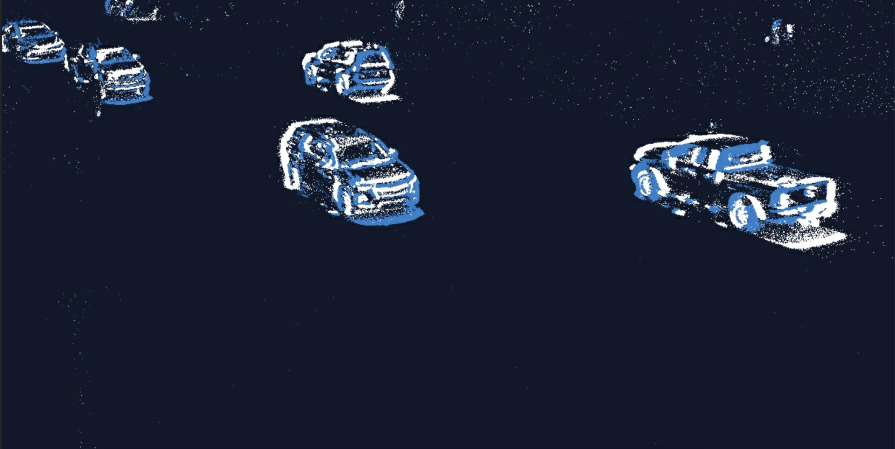

Need for Event Vision in Traffic Monitoring
In the realm of Intelligent Transportation Systems (ITS), the integration of various sensors like radar and traditional frame cameras has been instrumental in bolstering system resilience, especially in challenging situations. A noteworthy addition to this arsenal is the event camera, a cutting-edge technology that has garnered significant interest from researchers in the fields of visual perception and robotics.
<
The distinctive features of event cameras make them especially effective for outdoor long-term monitoring. They shine in scenarios with low-light conditions where standard cameras often struggle to perform optimally. Their ability to capture nuanced motion data in real-time equips traffic management systems with a level of precision and responsiveness that was previously unattainable.In addition to excelling in low-light conditions, event cameras offer a distinct advantage in daytime monitoring. Standard cameras can be hindered by strong glares from direct sunlight, leading to washed-out images and reduced visibility. Event cameras, on the other hand, are designed to handle such scenarios with finesse. Their unique approach to capturing intensity changes ensures that even in the presence of intense sunlight, they continue to provide clear and detailed data, enabling traffic management systems to operate seamlessly throughout the day.
The capability of event cameras to maintain clarity in high-glare environments further underscores their suitability for comprehensive, round-the-clock traffic monitoring solutions.
For those interested in exploring the potential of event cameras in traffic monitoring, we offer
access to a curated dataset. This collection of data provides a hands-on opportunity to delve into
the capabilities of event cameras and witness firsthand how they enhance traffic monitoring systems.
To access the dataset, please click here.
Datasets
The datasets are available in RAW format.
| Name | Sample | Description | Subjects | Duration | Weather conditions | Format offered |
|---|---|---|---|---|---|---|
| Elevated four-way intersection | Data of a traffic intersection at S Mill Ave, Tempe AZ collected from an elevated view | Vehicles: car, truck, bus Pedestrians Bicycle Bike Wheelchair |
4 hours |
Daytime - standard
Daytime - high glare Night - twilight Night - post sunset |
RAW DAT HDF5 Labels in numpy |
|
| Ground level four-way intersection |  |
Data of a traffic intersection at S Mill Ave, Tempe AZ collected from a ground level | Vehicles: car, truck, bus Pedestrians Bicycle Bike Wheelchair |
2 hours |
Daytime - standard
Daytime - rainy Night - twilight Night - post sunset |
RAW DAT HDF5 Labels in numpy |
| Elevated two-way roadways |  | Data of incoming and outgoing vehicular traffic at a two-way roadways in Tempe AZ collected from an elevated view | Vehicles: car, truck, bus |
2 hours |
Day - standard
Night - twilight Night - post sunset |
RAW DAT HDF5 Labels in numpy |
| Freeway | Data of incoming and outgoing vehicular traffic at a freeway in Tempe AZ collected from an elevated view | Vehicles: car, truck, bus |
1 hour | Day - standard | RAW DAT HDF5 Labels in numpy |
|
| Campus Premises | Data collected within the campus premises at ASU from a ground level | Pedestrians Bicycle Bike Wheelchair Skateboard |
1 hour | Daytime - standard
Nighttime - twilight |
RAW DAT HDF5 Labels in numpy |
|
| Ego-vehicle | Automotive data at Tempe AZ | Vehicles: car, truck, bus Pedestrians Bicycle Bike Wheelchair |
1 hour | Daytime - standard | RAW DAT HDF5 Labels in numpy |